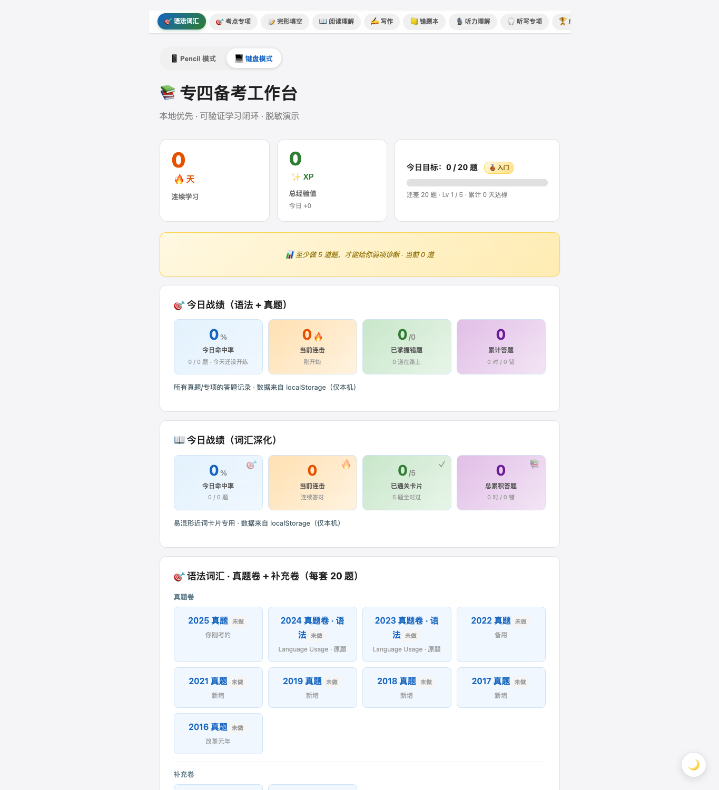

脱敏后的真实本地工作台界面专四备考工作台
如何把散落的真题、音频和错题，变成一条持续反馈的备考闭环？
从自己的备考痛点出发，搭建本地 Web 工作台：练习、计时、提交后反馈、错题回采、同类题回炉、历史成绩与 AI 评分交接都在同一条路径里。核心不是“资料更多”，而是让学生下一步该做什么变得清楚。
- 180
- 道 9 年语法真题
- 627
- 道扩展练习池
- 13
- 套听写训练
SELECTED WORK
不是把项目堆在一起，而是展示同一套能力如何迁移到学习、健康和复杂剧本协作里：先理解用户现场，再搭系统，再验证结果。

脱敏后的真实本地工作台界面如何把散落的真题、音频和错题，变成一条持续反馈的备考闭环？
从自己的备考痛点出发，搭建本地 Web 工作台：练习、计时、提交后反馈、错题回采、同类题回炉、历史成绩与 AI 评分交接都在同一条路径里。核心不是“资料更多”，而是让学生下一步该做什么变得清楚。
 iOS 26 版本界面
iOS 26 版本界面健康数据很多，但今天到底应该做什么？
把 Obsidian 里的训练与营养系统做成 SwiftUI App。它读取 Apple Health 与手动记录，明确区分事实、推断和行动，只给出一个当日最小动作。对用户来说，价值不是再听一遍通用建议，而是判断这次真正卡住的主因。
 合成剧本演示界面
合成剧本演示界面200 多页剧本和碎片证据，怎样在上场前变成可执行提示？
以原件、OCR、证据层级和人物行动线为基础，把复杂剧本整理成长版演员手册、短版 Cue 表、逐幕排练卡与现场降级路径。它解决的是 DM 和演员在真实现场的信息负担，而不是做一个漂亮 PDF。
HOW I WORK
先区分用户说出的方案与真正想抵达的状态，明确成功信号、约束和不可接受的代价。
吸收 Don’t be silent 的线下课方法，先看用户、流量、付费承接和第一单是否成立，再决定要不要继续做大。
把任务拆成数据、界面、判断、反馈与恢复路径，让产品能长期积累，而不只是一次性生成。
用 Claude Code、Codex、Skill 与自动化分工推进；我掌握方向、边界与验收，AI 放大执行力。
区分“写出来”“跑通过”“真机可用”和“真实用户验证”，不把局部成功包装成产品完成。
LOOKING FOR
我想加入重视真实问题、快速试验和长期产品判断的 AI 团队。欢迎从这 3 个案例开始了解我。